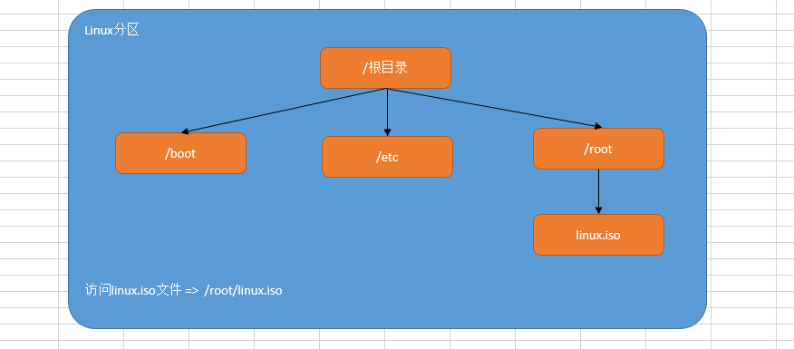

一、 Linux 系统使用注意
1.1 严格区分大小写
Linux 和 Windows 不同， Linux 严格区分大小写的，包括文件名和目录名、命令、命令选项、配置文件设置选项等。
例如，Win7 系统桌面上有文件夹叫做 Test，当我们在桌面上再新建一个名为 test 的文件夹时，系统会提示文件夹命名冲突：
- Windows 演示：

- Linux 演示：

由以上图解可知： Linux 是一个非常严谨的操作系统，严格区分大小写。
1.2 文件扩展名
在 Linux 操作系统中，与 Windows 不同，其文件的类型不是通过扩展名来进行区分的！
我们都知道， Windows 是依赖扩展名区分文件类型的，比如，".txt" 是文本文件、". exe " 是执行文件，但 Linux 不是。
Linux 系统通过权限位标识来确定文件类型，常见的文件类型有普通文件、目录、链接文件、块设备文件、字符设备文件等几种。 Linux 的可执行文件就是普通文件被赋予了可执行权限。
Linux 中的一些特殊文件还是要求写 "扩展名" 的，但 Linux 不依赖扩展名来识别文件类型，写这些扩展名是为了帮助运维人员来区分不同的文件类型。这样的文件扩展名主要有以下几种：
- 压缩包：Linux 下常见的压缩文件名有 *.gz、*.bz2、*.zip、*.tar.gz、*.tar.bz2、*.tgz 等。
- 二进制软件包：CentOS 中所使用的二进制安装包是 RPM 包，所有的 RPM 包都用".rpm"扩展名结尾，目的同样是让管理员一目了然。=> 类似 Windows 中的 exe 文件
- 程序文件：Shell 脚本一般用 ".sh" 扩展名结尾。=> check_network.sh
- 网页文件：网页文件一般使用 ".php" 等结尾，不过这是网页服务器的要求，而不是 Linux 的要求。例如：.html/.css/.js/.jsp/.php/.py =>网页文件
① Linux 操作系统不以"扩展名"来判断文件的类型，而是通过权限位标识符来进行判断。
② 有一些特殊的文件，有扩展名称=>压缩包、二进制软件包、程序文件、网页文件。
1.3 一切皆文件
在 Linux 系统中，一切皆文件！
在 Windows 是文件的，在 Linux 下也是文件。在 Windows 中不是文件的，在 Linux 系统中也是文件。
普通文件：通过 ls 命令查看时，如果显示黑色，代表其是一个普通的文件。
文件夹：通过 ls 命令查看时，如果显示天蓝色，代表是一个文件夹。
1.4 设备须挂载后才可用

Windows ：分区+格式化
Linux 操作系统：分区+格式化+挂载，存储设备必须挂载后才能使用（硬盘、光盘、U盘）
mount /dev/sda1 /mnt/file
二、Linux 系统的目录结构
2.1 Linux 与 Windows 分区
Linux 系统不同于 Windows ，没有 C 盘、D 盘、E 盘那么多的盘符，只有一个根目录（/），所有的文件（资源）都存储在以根目录（/）为树根的树形目录结构中。
Windows ：

Linux ：

2.2 Linux 系统文件架构

在 Linux 根目录（/）下包含很多的子目录，称为一级目录。例如 bin、boot、dev 等。
同时，各一级目录下还含有很多子目录，称为二级目录。例如 /bin/bash、/bin/ed 等。
2.3 Linux 系统的文件目录
| 目录 | 用途 |
|---|---|
| /bin | 系统命令目录 |
| /sbin | 超级命令目录，只能超级管理员可以执行的命令 |
| /boot | 系统目录，类似于 Windows 中的 C 盘 |
| /dev | 设备文件目录，硬盘、光驱、U盘都属于设备文件，/dev/sr0 代表光驱设备。注意，次目录下的文件没有办法直接使用，必须先挂载 |
| /etc | 非常重要，代表系统的配置文件目录。大部分软件安装完成后，其配置文件都存放在此目录 |
| /home | 普通用户的家目录，用户登录后会自动切换到此目录 |
| /root | 超级管理员的家目录，超级管理员登录后会自动切换到此目录 |
| /media | 挂载目录，早期 Linux 挂载目录，用于挂载光盘以及软盘 |
| /mnt | 挂载目录，用来挂载额外的设备，如 U 盘、移动硬盘和其他操作系统的分区 |
| /opt | 第三方软件目录，这个目录是放置和安装其他软件的位置，手工安装的源码包软件都可以安装到这个目录中。不过笔者还是习惯把软件放到 /usr/local/ 目录中，也就是说，/usr/local/ 目录也可以用来安装软件 |
| /usr | 系统程序目录，类似 Windows 中的Program Files |
| /proc | 虚拟文件系统。该目录中的数据并不保存在硬盘上，而是保存到内存中。主要保存系统的内核、进程、外部设备状态和网络状态等。 |
| /tmp | 临时文件目录，在该目录下，所有用户都可以访问和写入。建议此目录中不能保存重要数据，最好每次开机都把该目录清理 |
| /var | 经常变化的文件目录，网页文件、数据文件、日志文件 |
三、Linux 入门级命令
3.1 Linux 命令格式
一个完整的命令的标准格式： Linux 通用的格式
命令（空格） [选项]（空格）[参数]
但是有些命令比较特殊，可能没有选项也没有参数
pwd
还有一些命令，有命令有选项，但是没有参数
ls -l
还有一些命令，命令+选项+参数全都有
tail -n 3 readme.txt
3.2 Linux 下的命令补全
键盘上有一个按键：Tab 键
当我们在 Linux 系统的终端中，输入命令时，可以无需完整的命令，只需要记住命令的前几个字母即可，然后按 Tab 键，系统会自动进行补全操作。
# syste + Tab 或 systemc + Tab
自动补全为 =<font color='green'>systemctl
有些命令可能都以某几个字母开头，这个时候，只需要按两次Tab键，其就会显示所有命令。
# clea + Tab + Tab
Tab 键的功能特别强大：其不仅可以补全命令还可以补全 Linux 的文件路径
3.3 切换用户
基本语法：
su - root
Password:123456
[root@localhost ~]# 切换成功
扩展：- 横杠作用是什么？答：- 横杠代表切换用户的同时，切换用户的家目录
3.4 uname 命令
主要功能：获取计算机操作系统相关信息
基本语法：
# uname -a
选项说明：
-a：all 缩写，代表显示所有信息，获取全部的系统信息（类型、全部主机名、内核版本、发布时间、开源计划）
3.5 ls 命令
- 用法一
主要功能：ls（list show），以平铺的形式显示当前目录下的文件信息
基本语法：
ls
- 用法二
主要功能：显示其他目录下的文件信息
ls 其他目录的绝对路径或相对路径
扩展：ls 后面跟的路径既可以是绝对路径也可以是相对路径
绝对路径必须以左斜杠开头，一级一级向下访问，不能越级
- 用法三
基本语法：
# ls [选项] [路径]
选项说明：
-l：ls -l，代表以详细列表的形式显示当前或其他目录下的文件信息(简写命令=>ll)
-h：ls -lh，通常与-l结合一起使用，代表以较高的可读性显示文件的大小(kb/mb/gb)
-a：ls -a，a是all缩写，代表显示所有文件（也包含隐藏文件=>大部分以.开头）
3.6 pwd 命令
主要功能：pwd（print working directory），打印当前工作目录（告诉我们当前所处位置）
基本语法：
pwd
3.7 cd 命令
主要功能：cd（change directory），切换目录（从一个目录跳转到另外一个目录）
基本语法：
# cd [路径]
选项说明：
路径既可以是绝对路径，也可以是相对路径
案例一：切换到 /usr/local 这个程序目录
cd /usr/local
案例二：当我们在某个路径下，如何快速回到自己的家目录
cd
# 或
cd ~
3.8 clear 命令
主要功能：清屏
基本语法：
clear
快捷键
Ctrl + L
3.9 reboot 命令
主要功能：立即重启计算机
基本语法：
reboot
3.10 shutdown 命令
主要功能：立即关机或延迟关机
立即关机基本语法：
shutdown -h 0 或 now
shutdown -h 0
shutdown -h now
# 选项说明：
# -h ：halt 缩写，代表关机
在 Linux 系统中，立即关机除了使用 shutdown -h 0 以外还可以使用 halt -p 命令
延迟关机基本语法：
shutdown -h 分钟数
# 代表多少分钟后，自动关机
案例1：10分钟后自动关机
shutdown -h 10
案例2：后悔了，取消关机
# 光标一直不停的闪，取消关机
# 按 Ctrl + C（CentOS6，中断关机。CentOS7 中还需要使用 shutdown -c 命令）
shutdown -c
3.11 type 命令
主要功能：主要用来结合 help 命令，用于判断命令的类型（属于内部命令还是外部命令）
基本语法：
type 命令
# 内部命令：命令 is a shell builtin
# 外部命令：没有显示以上信息的就是外部命令
3.12 history 命令
主要功能：显示系统以前输入的前1000条命令
基本语法：
history
3.13 hostnamectl 命令
主要功能：用于设置计算机的主机名称（给计算机起个名字），此命令是 CentOS 7 新增的命令。
hostnamectl = hostname + control
- 获取计算机的主机名称
hostname --CentOS 6
hostnamectl --CentOS 7
- 设置计算机的主机名称
CentOS 7 中主机名分 3 类，静态的（static）、瞬态的（transient）、和灵活的（pretty）。
① 静态 static 主机名称：电脑关机或重启后，设置的名称亦然有效
② 瞬态 transient 主机名称：临时主机名称，电脑关机或重启后，设置的名称就失效了
③ 灵活 pretty 主机名称：可以包含一些特殊字符
CentOS 7 中和主机名有关的文件为 /etc/hostname，它是在系统初始化的时候被读取的，并且内核根据它的内容设置瞬态主机名。
更改主机名称，让其永久生效？① 使用静态的 ② 改 /etc/hostname文件
瞬态主机名称
hostnamectl --transient set-hostname 主机名称
# 主机名称 建议遵循 FQDN协议（功能+公司域名）
# web01.baidu.com
# web02.baidu.com
案例：临时设置主机名称为 yunwei.baidu.com
hostnamectl --transient set-hostname yunwei.baidu.com
su
# su 命令立即生效
静态主机名称
hostnamectl --static set-hostname 主机名称
# 温馨提示：--static 也可以省略不写
案例：把计算机的主机名称永久设置为 yunwei.baidu.com
hostnamectl --static set-hostname yunwei.baidu.com
su
# su 命令立即生效
灵活主机名称
hostnamectl --pretty set-hostname 主机名称（包含特殊字符）
案例：把计算机的主机名称通过灵活设置，设置为 yunwei's server01
hostnamectl --pretty set-hostname "yunwei's server01"
# 查看灵活的主机名称
hostnamectl --pretty